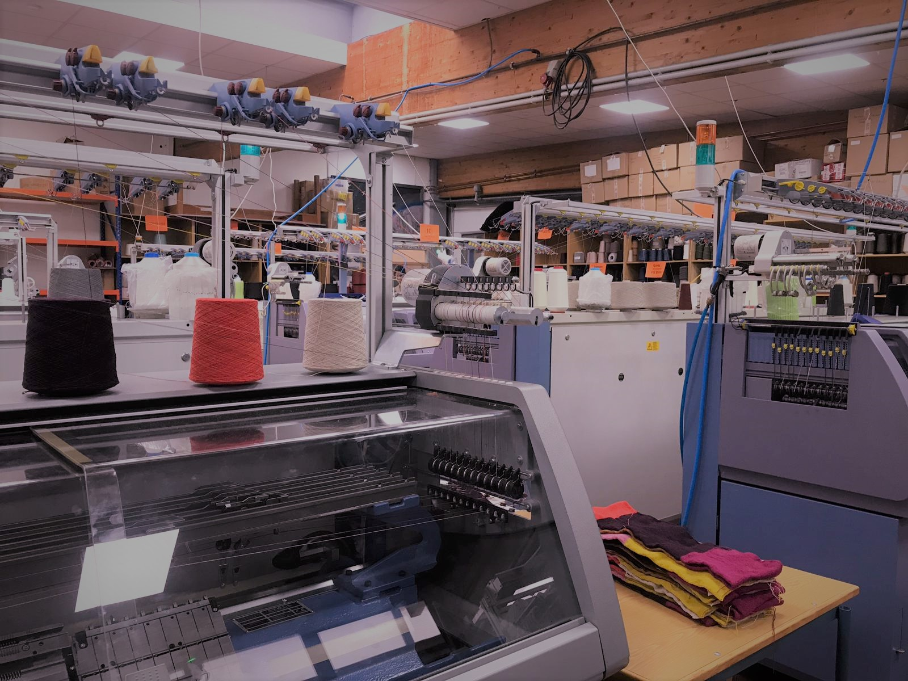

Fabrication for Care
Interdisciplinary Project Winter Semester 2018/2019
Rhine-Waal University of Applied Sciences FabLab Kamp-Lintfort
by Adriana Cabrera, Prof. Karsten Nebe, Prof. William Megill
Faculty Enviroment and Energy
BACHE INNOVATIVE
Bache Innovative The Strickerei Bache was founded in 1927 by Otto Bache in Apolda / Thuringia, the German knitting fortress. It is noteworthy for this company, that in 2006 the manufacturing process of "totally seamless products" was introduced.At the moment, the company includes 19 computer-controlled flat knitting machines.
In my opinion, this company is of great interest, since when designing models with 3D machines, seamless ... the possibilities of making special designs with the objective of covering different needs increas enormously.IMAGES

AUTODESK FUSION 360
Moreover, we learnt how to use the software Autodesk Fushion 360, which is a cloud-based CAD/CAM/CAE tool for collaborative product development. Below, there are some pictures of my design. My figure is a mobile article. To start with, I created two circle sketchs, and I joined them in "create" --> "Loft" to design the figure show below. Subsequently, the design of the sphere and the joint was design and revolved.
Subsequently, the design of the sphere and the joint was design and revolved.